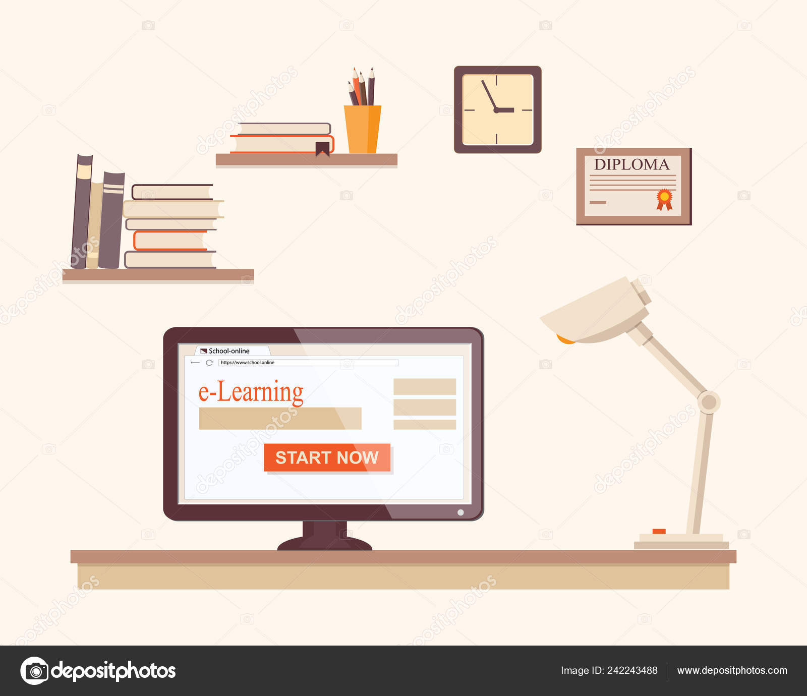

Competencias digitales
Cuando se habla de competencias digitales, se hace referencia al manejo de las tecnologías de la información y la comunicación para el procesamiento, transformación y transmisión de conocimiento, como una aplicación de nuevas estrategias educativas de aprendizaje.
Las competencias digitales le permitirán al educando potenciar sus habilidades en cuanto al uso de las TIC, desarrollando estrategias educativas fortalecidas al uso de las diferentes herramientas que facilitan estas tecnologías, mediante la creación de contenidos digitales acompañado de trabajo colaborativo, proyectos investigativos, diseño de blog educativo, entre otros.
Para lo anterior es fundamental comprender la importancia del internet y la tecnología en la sociedad actual, haciendo imperante el proceso de alfabetización digital, que según (Glister, 1997), la define como “la capacidad de acceder y utilizar los recursos de los ordenadores interconectados”. (Gutiérrez Martín, A., 2003)
Gutiérrez Martín, A. (2003). Alfabetización digital. Algo más que ratones y teclas.
